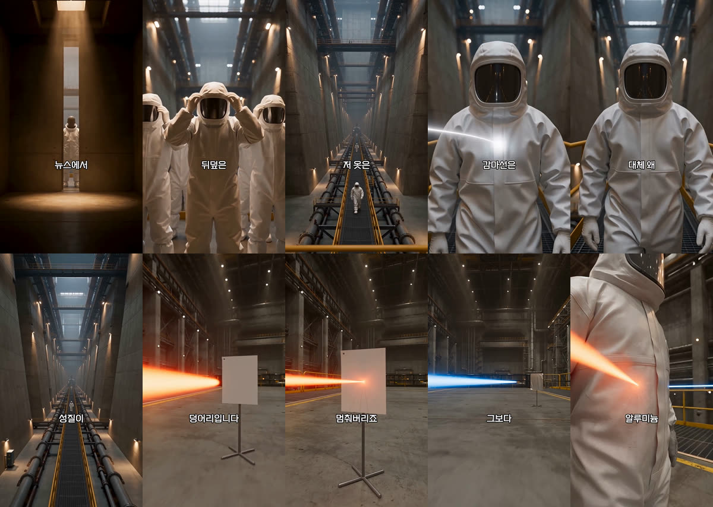
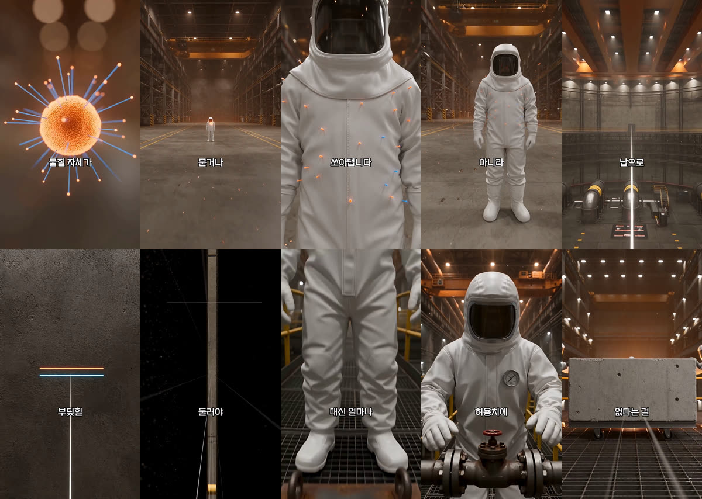
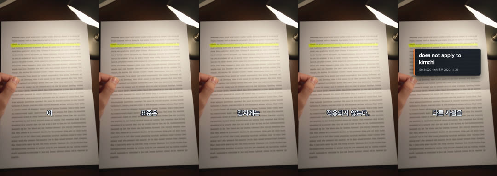
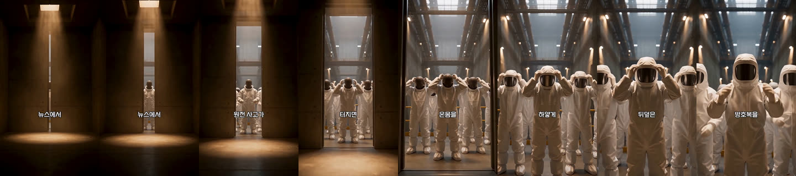
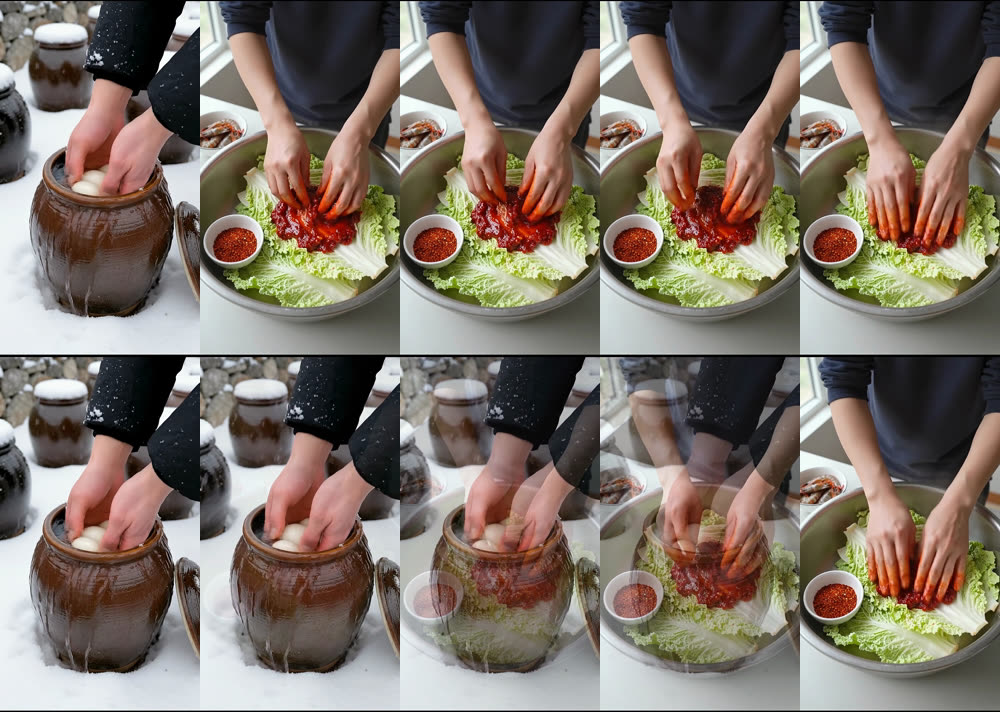

아니이게무슨 「원전 방호복이 방사선을 못 막는 이유」(YouTube Shorts b6AygLAYuvY, 2026-08-26, 3일 만에 2만 회). 이탈을 어디서 어떻게 막는지 보려고 컷·움직임·자막·대사 리듬을 전부 숫자로 뽑았고, 그 결과를 플러그인의 전환·자막·연출 문법에 옮겼다.
yt-dlp로 원본(1080×1920, 30fps, 85.33초)을 받아 ffmpeg select=gt(scene,0.3)로 하드 컷을, tblend=difference+signalstats로 초당 프레임 차이를, 자막 띠(y 1200~1300)만 잘라 같은 방법으로 자막 교체 순간을 셌다. 대사는 Qwen3-ASR로 받아썼고(579자·202어절·26문장), 자막 위치·크기는 흰 픽셀 행을 PIL로 읽었다. 재생 수·좋아요는 yt-dlp 메타데이터.


여섯 번의 하드 컷은 전부 대사가 새 질문을 여는 자리와 겹친다. 17.1초 「그럼 대체 왜 저걸 입고 들어가는 걸까요?」, 27.7초 「베타선은」, 33.2초 「여기까지는 옷 한 겹으로 충분합니다. 근데 진짜 재앙은 따로 있습니다」, 48.4초 「그럼 감마선까지 막게 납으로 만들면 되지 않을까요?」, 63.7초 「결국 인류는 막는 걸 포기합니다」, 76.0초 「멀리 서고 짧게 일하고」. 그림이 바뀌는 순간은 곧 이야기가 방향을 트는 순간이라, 컷이 거칠어도 끊긴다는 느낌이 없다.
그 사이 80초는 카메라가 계속 움직인다. 돌리·트래킹·천천히 들어가는 줌이 이어지고, 인물은 가만히 서 있어도 프레임이 흐른다. 우리 빌더가 스틸에 켄번즈를 거는 것과 같은 원리인데 세기가 다르다 — 참고 영상의 초당 프레임 차이 평균 5.0은 우리 스틸 기본값(카드당 3.5% 줌)보다 한참 크다.
| 항목 | 참고 영상 | 플러그인 (SUB_MODE=word, ep07 실측) |
|---|---|---|
| 큐 교체 수 | 164회 / 85.3초 | 92회 / 64.8초 |
| 큐 길이 중앙값 · 최소 · 최대 | 0.47 · 0.27 · 1.23초 | 0.48 · 0.28 · 1.57초 |
| 큐당 어절 | 1.23 | 1.28 |
| 글자 세로 위치(중심) | 65.0% | 64.2% |
| 글리프 높이 | 61px | 60px (Fontsize 84) |
| 전환 | 하드 스왑, 페이드 없음 | 하드 스왑, 페이드 없음 |

어절 시각은 추정이 아니라 정렬이다. 빌더가 카드마다 Qwen3 ForcedAligner를 돌리고(7초 카드에 3초), word-cues.py가 화면 글자를 TTS 발음 대본을 거쳐 정렬기가 들은 글자열에 difflib로 대응시킨다. 처음엔 어절 수를 맞춰 대응시켰는데 27개 중 14개가 실패했다 — 한국어 띄어쓰기가 ASR과 대본에서 다르기 때문이다(「입맛 당기시죠」를 ASR은 한 덩어리로 듣는다). 글자 단위로 바꾸자 27개 전부 붙었다(23개는 100% 일치, 최저 79%).
정확도는 정렬기와 다른 신호로 확인했다. 문장 첫 어절의 큐 시작을 빌더의 에너지 기반 무음 끝과 대조하니 18건 평균 0.02초, 최대 0.07초 차이였다. 정렬기 없이 글자 수 비례로 흩뿌리는 폴백은 같은 카드에서 평균 0.42초·최대 1.18초 어긋났고, 경고를 찍으며 뒤로 물러난다.
26문장에 85초, 문장당 3.3초·22자, 발화 6.8자/초. 문장 길이는 10자에서 46자까지 널뛰는데, 짧은 문장이 대개 갈고리다.
익숙한 그림(4초) → 뒤집기(5초) → 근거 그림 → 질문(13초). 질문을 던진 뒤 바로 「세 종류」라는 구조로 답을 세기 시작하고, 각 종류에 물건 하나(종이판·호일·통과)가 붙는다. 33초에 「근데 진짜 재앙은 따로 있습니다」로 두 번째 갈고리, 48초에 시청자가 떠올릴 반론(「그럼 납으로?」)을 대신 물어 세 번째, 63초에 「결국 인류는 막는 걸 포기합니다」로 방향을 튼다. 마지막 문장은 첫 문장의 방호복을 되짚는다 — 「사람을 지킨 건 하얀 방호복이 아니라 째깍거리는 시계」. 결말 프레임은 그 시계다.

transition: dissolve | dip | dip:white | push:<dir>. 디졸브는 앞 카드의 마지막 프레임을 들어오는 카드가 받아 자기 인코드 안에서 녹여 낸다(겹침 0, 길이·프레임 수·자막 큐 불변 — ep07 A/B 64.766667초·1943프레임 동일). 참고 영상이 보여준 건 디졸브가 아니라 「움직임과 같은 공간이 컷을 부드럽게 만든다」는 것이라 scenes-schema에는 그렇게 적었다.SUB_MODE=word, 정렬기 기반, SRT는 문장 단위 유지. produce SKILL §6.space.layout 기본 문장 + light 한 문장으로.
visual.video 슬롯이 든다. 상한은 그대로 두었고, 어느 카드가 원하는지는 스토리보드가, 몇 개를 살지는 사용자가 정한다.